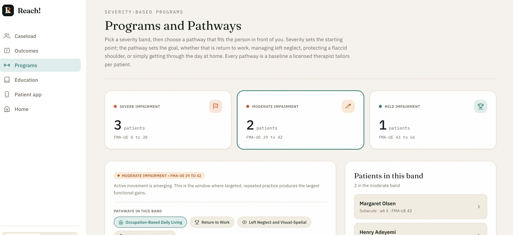
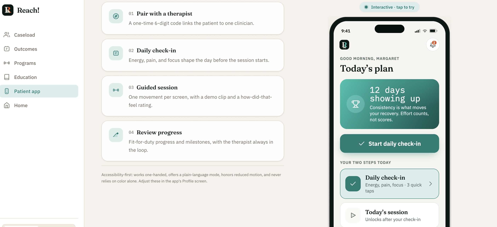

The Challenge: Recovery Data That Lives Everywhere and Nowhere
Standardized outcome measures such as the Fugl-Meyer Assessment (FMA-UE), the Action Research Arm Test (ARAT), and Box and Blocks are the gold standard for tracking motor recovery after stroke. In practice, clinicians document them inconsistently because capture is slow and the scores end up scattered across disconnected systems.
Home exercise adherence makes up the other half of recovery, yet it is almost invisible between visits. A therapist often walks into a session without a clear read on whether the home program is actually being done. Reach exists to close that gap by connecting both halves into one clinician-facing interface while preventing the same scores from being typed twice.
One Interface, Driven by Outcomes
Rather than another generic charting tool, Reach is built around the way recovery is actually measured. Assessment scores drive everything downstream, so the clinician logs data once and the system does the routing.
1. Outcome-Driven Severity
FMA-UE scores automatically segment patients into Mild, Moderate, or Severe baseline programs. The clinician logs an assessment, and the system assigns the appropriate program rather than leaving them to build one from scratch.
2. Broad, Banded Pathways
Within each severity band, pathways fit the patient's real life: occupation-based daily living, fine motor and dexterity, return to work, left neglect, and anti-subluxation shoulder protection.
3. Adherence as an Early Warning
Reach tracks active reps, mental practice, and assisted daily tasks. When adherence drops below 60 percent, it surfaces the patient as a stalled home program before a wasted visit confirms it.

Designed Around Three Occupational Therapists
Reach was shaped through direct, iterative feedback from three occupational therapists, so the product aligns with real clinical workflows and the human factors of a busy session rather than my assumptions about them.
OT 1: Workflow and Programs
Pushed for reduced interface clutter, embedded education, and severity-banded programs driven by FMA, ARAT, or Box and Blocks. Asked for prescribed exercises with video demonstrations, repetition tracking, and copy-and-paste documentation blurbs to simplify charting.
OT 2: Outcomes Drive Everything
Verified the treatment and education layout and recommended a subjective progress area for patient self-report. Emphasized that assessment entries should drive pathway recommendations directly, to save time and prevent double-documentation across systems.
OT 3: Admin and Family
Focused on the difference between typing during a session and documenting afterward. Proposed a documentation status tracker for in-progress versus completed notes, plus a simplified caregiver portal to coordinate support at home.
Human Factors & Product Implementation
Each piece of clinician feedback maps to a concrete decision in the product. The result is an interface that does the routing and the writing the clinician would otherwise carry in their head.
Outcome-driven severity programs
FMA-UE scores automatically segment patients. The clinician logs assessments, and the system assigns a Mild, Moderate, or Severe baseline program with no extra step.
Pathways that fit the person
Occupation-based daily living spans every band. Fine motor, dexterity, and return to work serve Mild and Moderate. Left neglect and visual-spatial work cover Moderate and Severe, and anti-subluxation shoulder protection serves Severe.
Repetition and adherence auditing
Compliance metrics are tracked over time, and the system flags when adherence falls below 60 percent as an early signal of a stalled home program.
Copy-and-paste documentation
High-quality progress notes are generated for each selected pathway, ready to paste straight into the clinic's electronic medical record, which removes the most repetitive part of charting.
Patient and caregiver loops
A companion mobile app (currently an interactive demo) lets patients report daily pain, energy, and perceived arm use, with a guided daily session and streak-based encouragement, plus messaging for asynchronous movement analysis and caregiver coordination.

Outcomes, Learnings, and Growth
Reach took a clinical focus from the first sketch. Designing it around standardized measures and the daily occupations of stroke survivors - dressing, writing, eating, and typing - kept the work grounded in what recovery actually looks like instead of a narrow return-to-work frame. The clearest lesson was that the people doing the documenting have to design it with you, otherwise you build a tool that is technically correct and clinically unusable.